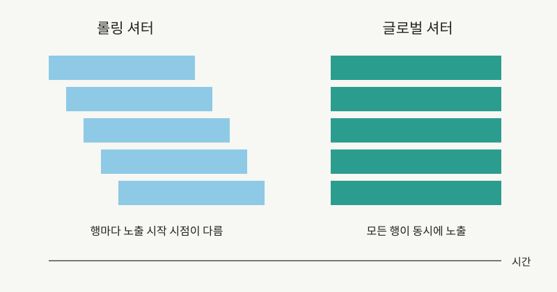
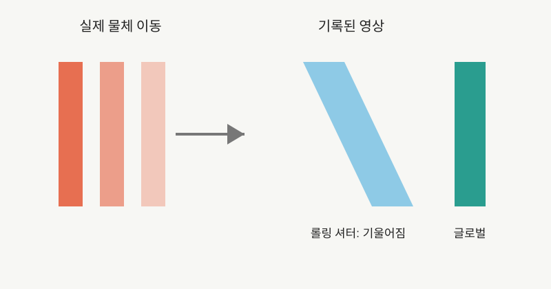
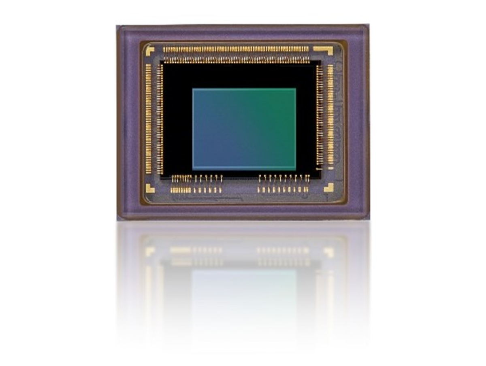

NOTE 14 · IMAGE SENSOR
글로벌 셔터 이미지센서의 동작 원리
CMOS 이미지센서의 전자 셔터는 노출을 시작하고 끝내는 시점에 따라 롤링 셔터와 글로벌 셔터로 나뉜다. 롤링 셔터는 행을 순서대로 노출하고 읽는다. 글로벌 셔터는 모든 픽셀의 노출 구간을 같은 시점에 맞춘 뒤 저장된 신호를 차례로 읽는다.

롤링 셔터에서는 첫 번째 행과 마지막 행의 노출 시점에 차이가 생긴다. 그 사이에 카메라나 피사체가 움직이면 한 프레임 안에 서로 다른 시각의 위치가 섞인다. 수직 기둥이 기울거나 회전하는 프로펠러가 휘어 보이는 현상이 대표적이다.

이 왜곡은 모션 블러와 다르다. 모션 블러는 한 픽셀의 노출 시간 동안 피사체가 움직여 경계가 퍼지는 현상이다. 글로벌 셔터도 노출 시간이 길면 모션 블러가 생긴다. 글로벌 셔터가 제거하는 것은 행별 노출 시점 차이에서 오는 기하 왜곡이다.

CMOS 글로벌 셔터 픽셀에는 노출이 끝난 전하나 전압을 임시로 보관하는 메모리 노드가 필요하다. 모든 픽셀의 신호를 동시에 저장한 뒤 행별 ADC로 순차 전송한다. 이 저장 소자는 픽셀 면적을 차지하고 추가 트랜지스터와 배선을 요구한다.
저장 노드에 노출 중 빛이나 전하가 섞이면 이미지에 잔상과 오차가 생긴다. 이를 나타내는 항목이 기생광 감도(Parasitic Light Sensitivity)다. 저장 노드 차광, 전하 전달 효율, kTC 노이즈와 픽셀 내 메모리 용량이 글로벌 셔터 설계의 핵심이다.
글로벌 셔터는 빠른 컨베이어 검사, 로봇 자세 추정, 바코드 판독, 3차원 측정과 고속 운동 분석에 적합하다. 정지 장면과 저조도 화질이 우선인 소비자 카메라에서는 픽셀 면적과 동적 범위, 원가 측면에서 롤링 셔터가 여전히 유리할 수 있다.
Sony의 Pregius S는 후면조사형과 적층 구조를 사용해 글로벌 셔터 픽셀의 면적 부담을 줄이는 방향이다. 글로벌 셔터의 채택 여부는 프레임 속도 하나가 아니라 허용 가능한 왜곡, 광량, 노이즈와 센서 크기를 함께 보고 결정한다.